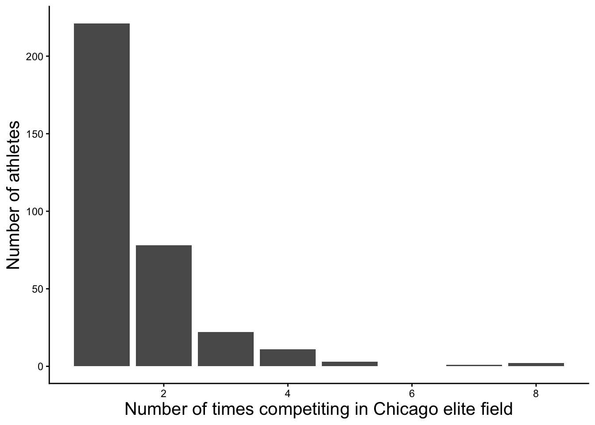
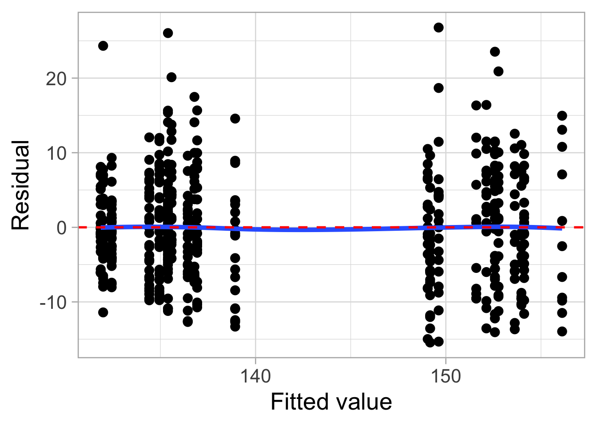
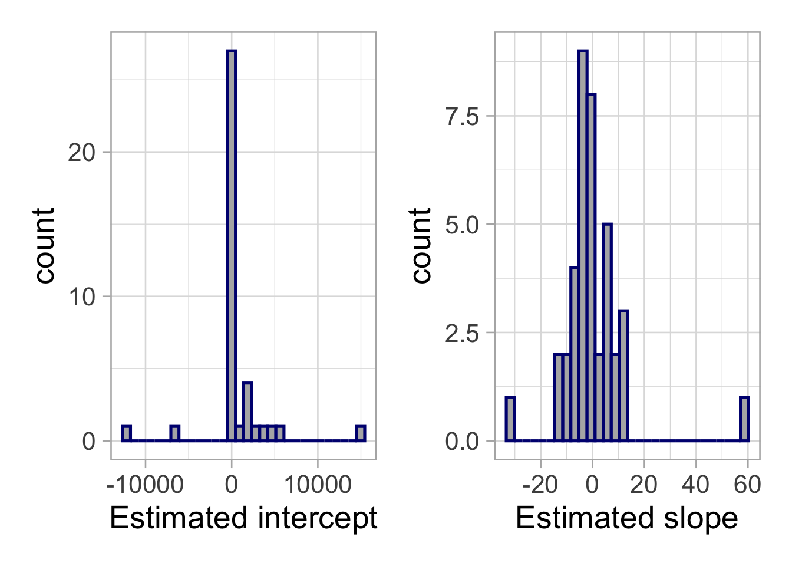
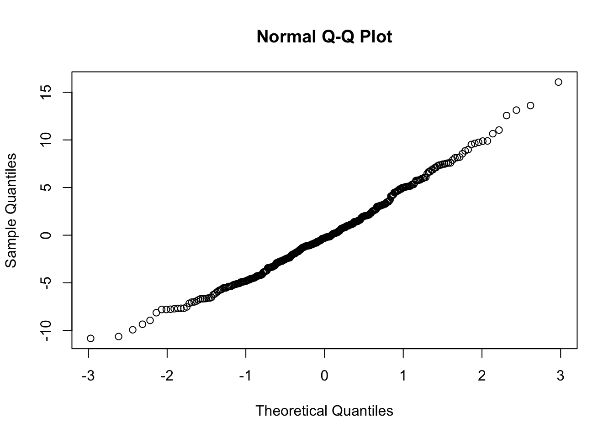

Department of Statistics & Data Science Carnegie Mellon University
Motivation
So far, all models we have discussed have assumed independent observations
. . .
However, this is often unrealistic! Correlated data can be found in nearly every field.
Education: Students taught by the same teacher tend to have more similar scores than students taught by different teachers.
Sports: an player’s performance metrics across a few seasons tend to be more similar than metrics from other players.
Political polling: opinions from members of the same household are usually more similar than opinions of members from other randomly selected households.
. . .
Intraclass correlation: correlation of observations within the same teacher, player, or household
Correlated outcomes provide less information than independent outcomes, resulting in effective sample sizes that are less than the total number of observations.
An extreme example: suppose ten students submit their own exams, but are allowed to work in pairs.
While you have 10 individual exams, you are really only have five independent pieces of information.
. . .
Neglecting to take into account correlation may lead to:
underestimating standard errors of coefficients
overstating significance and precision
. . .
Therefore, we need to account for correlation if basic observational units (e.g., students, players) are aggregated in ways that would lead us to expect units within groups to be similar.
Rows: 525 Columns: 18
── Column specification ────────────────────────────────────────────────────────
Delimiter: ","
chr (6): Race, Name, Gender, Country, super_era, super_era_elite
dbl (11): Year, Age, Overall, Finish, Gender_place, international, time_min...
time (1): Finish Time
ℹ Use `spec()` to retrieve the full column specification for this data.
ℹ Specify the column types or set `show_col_types = FALSE` to quiet this message.
head(elite) |>gt()
Name
Year
Division
Age
Country
time_min
super_era_elite
temp9
Gender_place
Overall
Ejegayehu Dibaba
2011
F
29
ETH
142.1500
No
64
1
26
Kayoko Fukushi
2011
F
29
JPN
144.6333
No
64
2
35
Belainesh Zemedkun Gebre
2011
F
24
ETH
146.2833
No
64
3
41
Christelle Daunay
2011
F
39
FRA
146.6833
No
64
4
46
CHallissey
2011
F
29
air
149.4500
No
64
5
67
Askale Tafa
2011
F
29
ETH
153.5833
No
64
7
104
Identifying level one and two variables
The data is nested: we have can have multiple performances for each runner.
Therefore, we do not have independent observations!
Level one variable: variables measured at the most frequently occurring observational unit (each individual’s race)
Weather (wind, temperature), athlete age, year, super shoe era indicator
Level two variables: variables measured runner level
Division (men vs. women), country
elite |>count(Name) |>ggplot(aes(x=n))+geom_bar()+theme_classic()+labs(x="Number of times competiting in Chicago elite field",y ="Number of athletes")+theme(axis.title =element_text(size =15), legend.position ="none")

Trajectory of marathon times over the years
Even before super shoes, marathoners have slowly been getting faster over time.
For this reason, we may want to include year as a covariate in modeling in addition to a super shoe era indicator variable.
Additional factors impact finish time (e.g. temperature, division)
elite |>ggplot(aes(x = temp9, y=time_min, color = Division))+geom_point(alpha=0.5)+geom_smooth()+facet_wrap(~Division, scales ="free_x")+scale_color_manual(values =c("darkorange", "royalblue"))+labs(x="Temperature at 9am on raceday", y="Finish time (min)")+theme(legend.position ="none")
`geom_smooth()` using method = 'loess' and formula = 'y ~ x'
We could start by fitting a multiple linear regression model. Why is this not recommended?
pooled_model <-lm(time_min ~ Year + super_era_elite + Division + temp9, data = elite)library(gtsummary)tbl_regression(pooled_model)
Characteristic
Beta
95% CI
p-value
Year
-0.22
-0.54, 0.09
0.2
super_era_elite
No
—
—
Yes
-1.4
-3.8, 1.0
0.3
Division
F
—
—
M
-17
-18, -16
<0.001
temp9
0.20
0.12, 0.29
<0.001
Abbreviation: CI = Confidence Interval
broom::augment(pooled_model) |>ggplot(aes(x = .fitted, y = .resid)) +geom_point() +geom_smooth(se =FALSE) +labs(x ="Fitted value", y ="Residual")+geom_hline(linetype ="dashed", color ="red", yintercept =0)
`geom_smooth()` using method = 'loess' and formula = 'y ~ x'

A Two-Stage Modeling Approach (imperfect)
If we assume that the 338 individual runners can reasonably be considered to be independent, we can use linear regression if we condense each runner’s set of responses to a single meaningful outcome (e.g. first or last Chicago Marathon each runner completed).
. . .
Unfortunately, by doing this, we end up ignoring much of the information contained in the multiple measures for each individual.
. . .
A more informative approach is to keep all marathon performances while accounting for the fact that observations from the same runner are correlated.
. . .
To motivate this idea, suppose we temporarily analyze one runner at a time.
Using just Kristen’s data, we can fit a multiple linear regression to answer questions such as, does Kristen tend to run faster when she is using with super shoes than without?
. . .
Let \(Y_{KHj}\) be Kristen’s time on marathon \(j\). Consider the observed races for Kristen to be a random sample of all her conceivable races. If we are initially interested in examining the effect of super shoes, we can model Kristen’s times according to model:
\[Y_{KHj}=a_{KH}+b_{KH}\textrm{SS_era}_{KHj}+\epsilon_{KHj} \textrm{ where } \epsilon_{KHj}\sim N(0,\sigma^2)\]
. . .
\(a_{KH}\): true intercept for KH (the expected marathon time for KH without super shoes)
\(b_{KH}\): true slope for KH (Kristen’s estimated difference in marathon time between races before and during the super shoe era)
\(\epsilon_{KH}\): deviations of KH’s actual marathon times from the expected times under this model
A Two-Stage Modeling Approach (imperfect)
We can continue to add additional indicators to Kristen’s model, such as temp, year and age.
We cannot incorporate predictors such as gender division.. why?
. . .
To motivate a mixed-effects model, suppose we fit the a regression (with covariates temperature, year, age, and super shoe era) separately for every runner who competed both before and during the super shoe era.
This produces an estimated intercept and estimated slope for each variable for each runner.
The distributions of these estimated intercepts and slopes are shown below.
Notice: they look very unstable!
. . .
data <- elite |>group_by(Name) |>mutate(races =n(), min_race =min(Year),max_race =max(Year)) |>filter(races >=2& min_race <2017& max_race >=2017)ints <-c()slopes <-c()for(name inunique(data$Name)){ data_sub <- data |>filter(Name == name) mod <-lm(time_min ~ super_era_elite + temp9 + Year + Age, data = data_sub) ints <-append(ints, mod$coefficients[1]) slopes <-append(slopes, mod$coefficients[2])}a <-data.frame(ints) |>ggplot(aes(x=ints))+geom_histogram(bins=30, color ="navy", fill ="gray70")+labs(x="Estimated intercept")b <-data.frame(slopes) |>ggplot(aes(x=slopes))+geom_histogram(bins=30, fill ="gray70", color ="navy")+labs(x="Estimated slope")library(patchwork)a + b

A Two-Stage Modeling Approach (imperfect)
The estimated intercepts and slopes vary considerably from runner to runner.
. . .
Fitting the same regression on each individual runner and combining to get an overall estimate has several flaws:
Weights every subject the same regardless of the number of marathons they have run
Drops all subjects that did not run in both and pre- or post- super shoe era (many of the runners!)
Cannot use level two covariates to explain variation in performance (e.g. gender division)
Does not borrow information across runners, so each runner’s regression is estimated independently.
A better solution: mixed effects
Rather than treating the estimated coefficients as fixed quantities, a linear mixed effects model assumes they arise from a common population distribution.
\(\beta_0\) is the population average super shoe era effect.
\(u_i\) and \(v_i\) represent runner specific deviations from these population averages.
. . .
These assumptions allow information to be shared across runners, producing more stable estimates of the runner-specific intercepts and slopes.
Mixed effects structure
A linear mixed effects model allows us to estimate the population average effects while accounting for the correlation among repeated performances from the same runner.
. . .
Let \(Y_{ij}\) denote the marathon time for runner \(i\) in race \(j\).
The fixed effects (\(\beta_1,\ldots,\beta_5\)) estimate the average relationship between each predictor (super shoe era, year age, temperature, and gender division) and marathon time across the population of elite runners.
. . .
The random effect\(u_i\) allows each runner to have their own baseline marathon performance, accounting for differences in ability that are not explained by the observed predictors.
Without a runner-specific random intercept, the model would assume that every runner has the same expected marathon time (after adjusting for the fixed effects).
This implies that repeated performances from the same runner are no more similar than performances from different runners.
What is the difference from including Name as a factor variable?
Including runner name as a factor variable…
makes no assumptions about how runner intercepts are distributed.
can estimate an intercept for every observed runner.
. . .
However, it…
requires estimating \(m−1\) additional parameters if there are \(m\) runners.
cannot predict for a new runner.
doesn’t “borrow strength” across runners.
. . .
A random intercept estimates one variance \(\tau^2\) and each runner’s random deviation \(u_i\) is inferred from that deviation.
These estimated effects are partially pooled toward 0.
Within-runner error (\(\epsilon_{ij}\)): Even after accounting for super shoe era, age, year, weather, and division, marathon times will vary from race to race.
Reasons: pacing decisions, nutrition, illness, etc.
If \(\tau^2=0\), performances from the same runner are no more similar than performances from different runners.
As \(\tau^2\) increases, repeated marathon times from the same runner become more highly correlated.
This quantity is called the intraclass correlation coefficient (ICC).
Fitting the Model
A linear mixed-effects model can be fit in R using the lmer() function from the lme4 package.
library(lme4)
Loading required package: Matrix
Attaching package: 'Matrix'
The following objects are masked from 'package:tidyr':
expand, pack, unpack
mod <-lmer(time_min ~ super_era_elite + Year + Age + temp9 + Division + (1| Name), data = elite |>mutate(Year = Year -2017))tbl_regression(mod)
Characteristic
Beta
95% CI
super_era_elite
No
—
—
Yes
-2.3
-4.0, -0.54
Year
-0.09
-0.34, 0.17
Age
0.21
0.06, 0.36
temp9
0.17
0.11, 0.23
Division
F
—
—
M
-17
-18, -16
Abbreviation: CI = Confidence Interval
Model components:
time_min ~ ... specifies the fixed effects.
(1 | Name) specifies a random intercept for each runner.
Parameters are estimated jointly using (restricted) maximum likelihood rather than ordinary least squares.
Parameter Estimation and REML
By default, lmer() uses REML = TRUE, where REML stands for restricted maximum likelihood.
. . .
Many of the models we have discussed so far use maximum likelihood: parameter estimates are chosen to maximize the value of the likelihood function based on observed data.
This means the fixed effects \(\beta\), random effects variance \(\tau^2\), and residual variance \(\sigma^2\) are estimated simultaneously.
As a result, ML tends to underestimate the variance components.
. . .
REML finds a clever way to rewrite the likelihood so we can estimate the random effects variances alone, without estimating the fixed effects, and then using these to estimate the fixed effects.
. . .
Always use REML, unless nested fixed effects models are being compared using a likelihood ratio test.
This is because changing the fixed effects changes what is removed, so the REML likelihoods are based on different transformed data and are not directly comparable.
closer to 0: responses are more independent, the multilevel model structure is not as relevant.
Effective sample size (the number of independent pieces of information we have for modeling) approaches the total number of observations.
closer to 1: repeated observations provide no new information, multilevel group structure is important.
Effective sample size approaches the number of subjects in the study.
Random slopes
So far we have fit a mixed effects model with random intercepts, which, allows each runner to have their own baseline marathon performance while assuming the effects of the predictors are the same for every runner.
. . .
This assumption implies that effect of super shoes on marathon time is the same for every runners.
. . .
But what if some runners exhibit a much larger before vs. after difference than others?
. . .
A random slope allows the effect of the super shoe era to vary from runner to runner, in addition to allowing different baseline marathon performances.
Fitting random slopes
The following code would allow to fit a mixed effects model with random intercepts and random slopes for the super_era_elite coefficient.
mod <-lmer(time_min ~ super_era_elite + Year + Age + temp9 + Division + (1+ super_era_elite | Name), data = elite |>mutate(Year = Year -2017))
. . .
For this data, we cannot actually implement random slopes
Most runners probably have only one marathon, or they only ran before 2017 or after 2017.
For these runners, a random slope is not identifiable because we can’t estimate a before vs. after difference from a single observation (or from observations that are all in the same era).
. . .
On the other hand, a random intercept only requires one observation per runner.
Even one marathon tells us something about whether that runner is generally faster or slower than average.
Exploring the player-level effects using merTools
After fitting the model, we can estimate each runner’s random intercept.
The relationship between each continuous predictor is approximately linear.
The error variance is constant.
The errors are normally distributed.
. . .
Independence: after accounting for the random effects, the errors \(\epsilon_{ij}\) are independent.
. . .
Additional assumption: the random effects are normally distributed: \(u_i \sim N(0, \tau^2)\).
qqnorm(ranef(mod)$Name[,1])

Are random effects needed?
We can do a hypothesis test which can be useful if we want to test for presence of a random effect.
We are assume the random effects are normally distributed with some covariance matrix \(\Sigma\). If \(\Sigma\) is the zero matrix, the random effects are all zero and the random effect term can be omitted.
. . .
This can be tested with an LRT. However …
the asymptotic distribution of the likelihood ratio statistic depends on certain regularity conditions
one of those conditions is that the parameter not be on the boundary of the parameter space.
The variances being zero is certainly on the boundary.
This means even as \(n \rightarrow \infty\), the LRT statistic will not approach the \(\chi^2\) distribution, so we treat this statistic as an approximation.